ЛАБОРАТОРНА РОБОТА №6
Тема WEB-СЕРВЕРИ ТА ПРИНЦИПИ ЇХ РОБОТИ З КОРИСТУВАЧЕМ.
СЕРВЕРНІ WEB-ЗАСТОСУВАННЯ.
Мета: придбати практичні навички встановлення та конфігурування WEB-сервера, встановлення та налаштування Apache
Середовища, в яких ми працювали: Всеволод - Visual Studio Code, Аня - WebStorm, Ангеліна - Visual Studio Code
Динамічні елементи, створені за допомогою бібліотеки JQuery
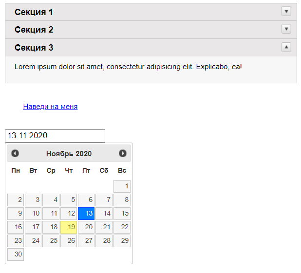Встановлення веб-серверу Apache
Завдання:
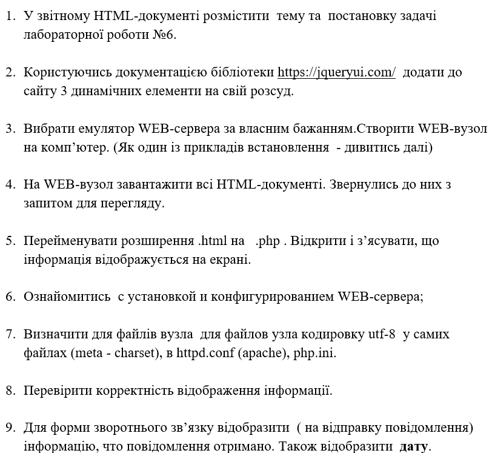Зайшли на сайт apache.org та скачали zip-архів
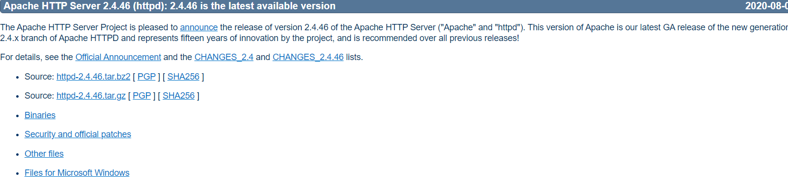Розпакували у папку
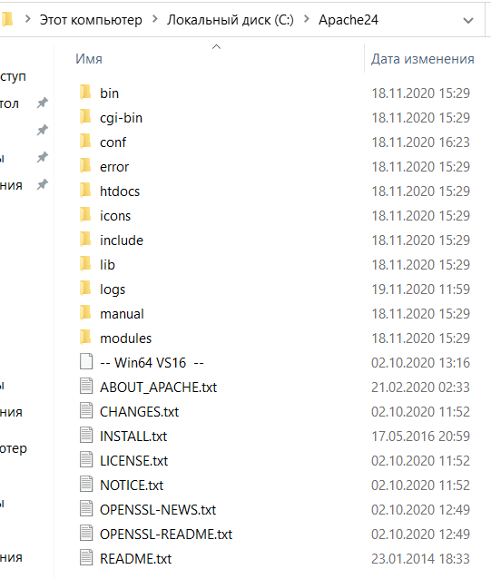У архіві був README-файл, ми слідували інструкціям
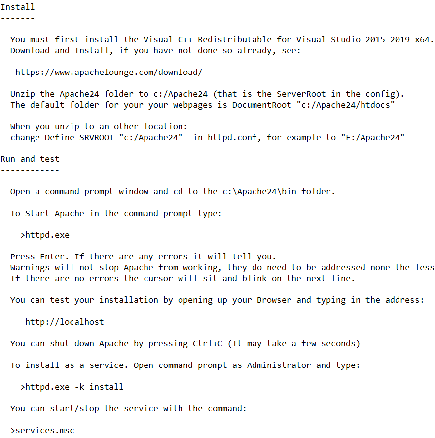Зміни у файлі httpd.conf(файл конфігурації apache)
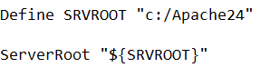 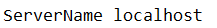 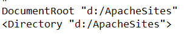 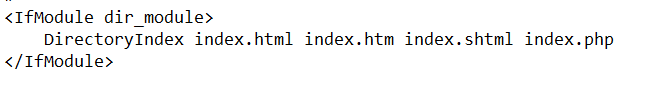Завантажили HTML-документи та через веб-сервер маємо змогу передивлятися їх
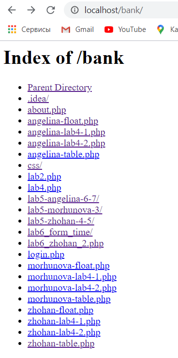 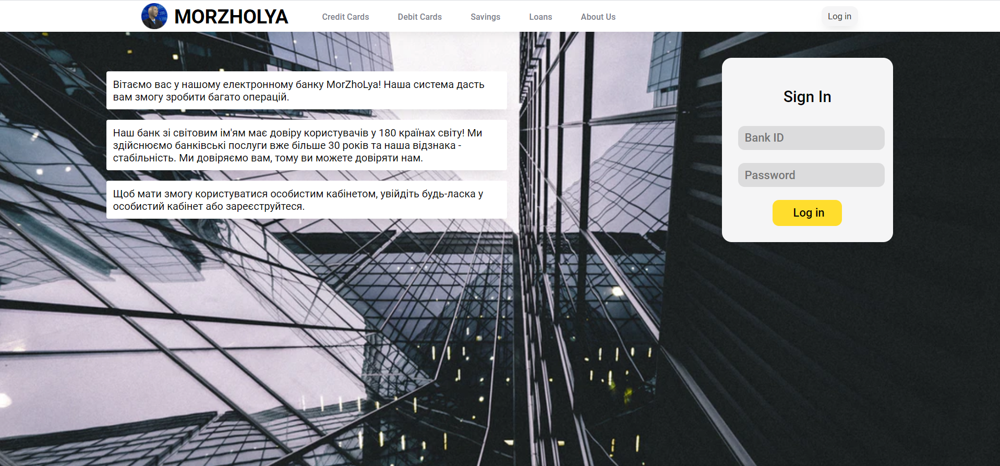Директорія з HTML-файлами, до якої під'єднаний apache (згодом ми змінили HTML на PHP)
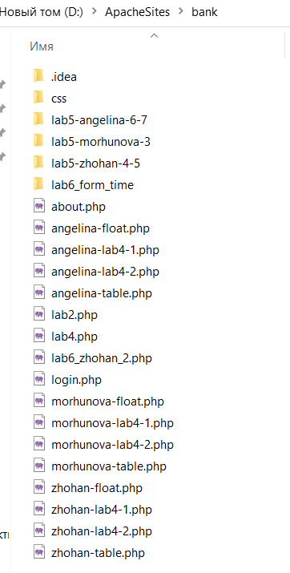Скачали zip-архів з офіційного сайту
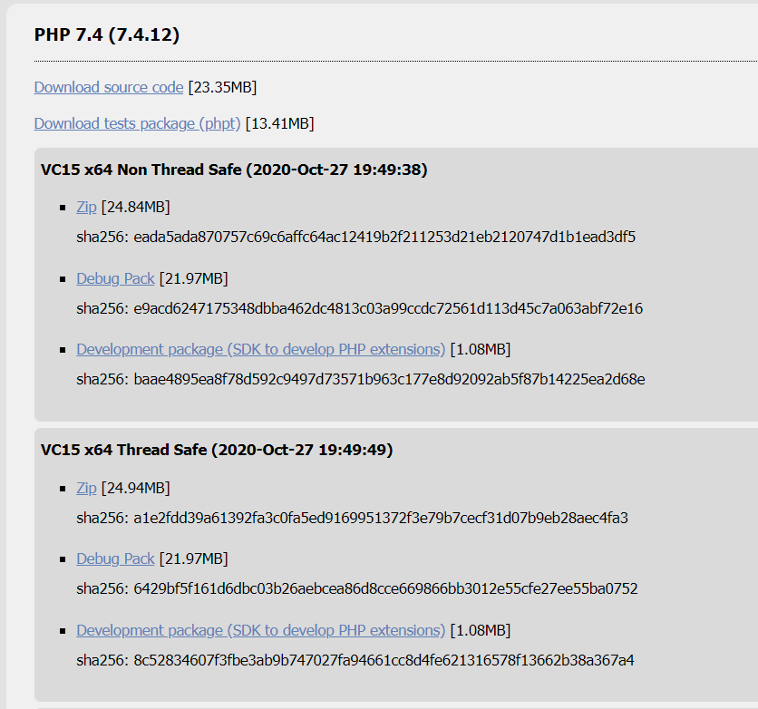Директорія з PHP-файлами
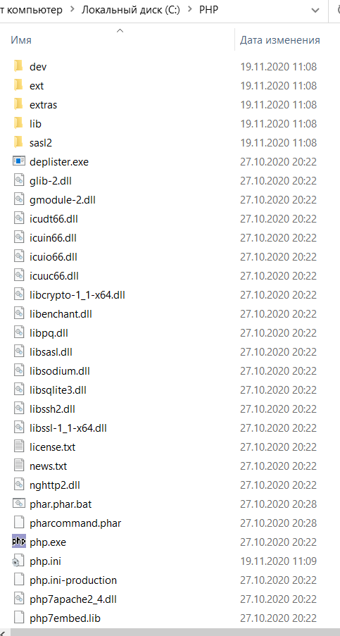Спочатку у файлі httpd.conf записали шлях до директорії php
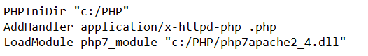Зміни у конфігурації файлу php.ini(Ми його перейменували з php.ini-development)
Додали шлях до папки з розширеннями та підключили найголовніші, на нашу думку розширення.
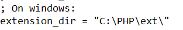 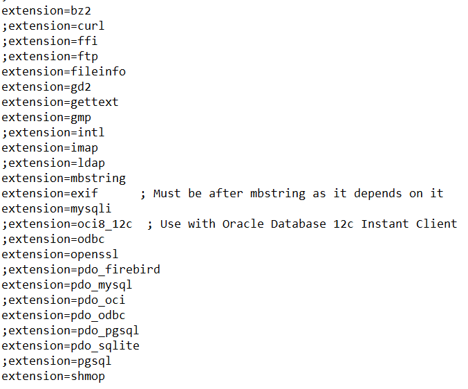 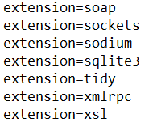Код виконання скрипту:
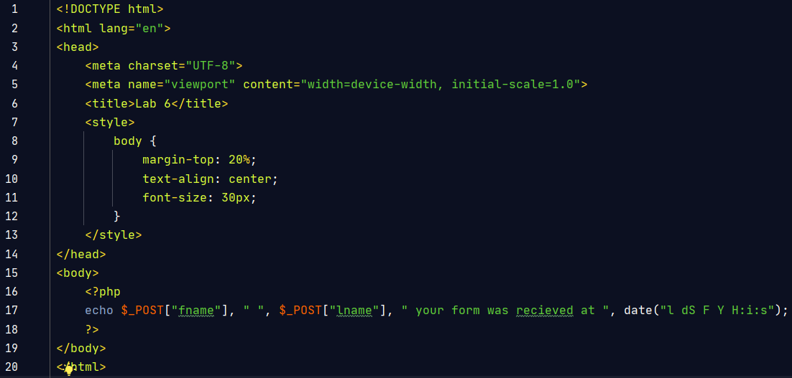Встановленно кодування UTF-8 для сторінки
Результат виконання скрипту php:
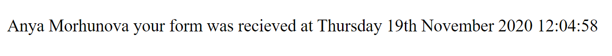Висновки
У цій лабораторній роботі ми навчились встановлювати web-сервер Apache на свiй комп'ютер, також ми навчилися встановлювати php, розібрались у файлах конфігурації та зв'язали php та apache.